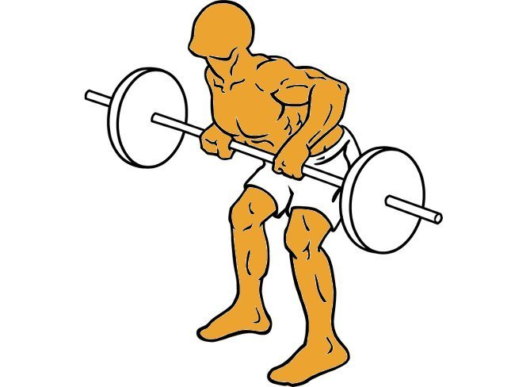
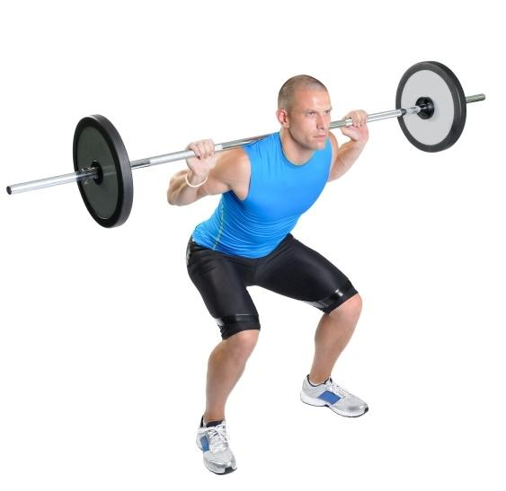
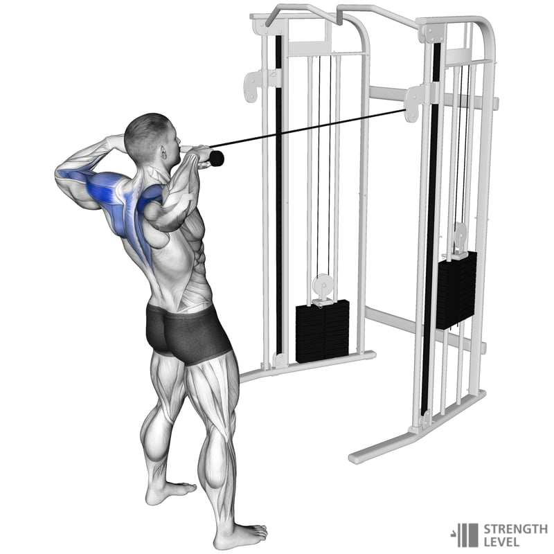

Somos ZyzzVibes! Una pagina donde encontraras todo acerca del mundo fitness, estamos dispuestos a ayudarte en el trackeo del progreso, recomendacion y explicacion de ejercicios, entre otras cosas.
Pecho
Los ejercicios de pecho están diseñados para fortalecer y desarrollar los músculos pectorales mayores. Incluyen movimientos como elevaciones de pecho con mancuernas, flexiones de pecho y press de banca.
-
 Press inclinado
Press inclinado
- Aperturas con Polea
-
 Press de banca
Press de banca
Espalda
Los ejercicios de espalda fortalecen los músculos dorsales y lumbares, mejoran la postura y contribuyen a la estabilidad del core. Incluyen movimientos como dominadas, remo con barra y peso muerto.
-
 Jalón al Pecho
Jalón al Pecho
-  Remo con barra
- Pull over
Pierna
Los ejercicios de pierna fortalecen los músculos cuádriceps, isquiotibiales, glúteos y pantorrillas. Incluyen movimientos como sentadillas, prensa de piernas y extensiones de piernas.
-  Sentadillas
-
 Prensa de piernas
Prensa de piernas
-
 Extensiones de piernas
Extensiones de piernas
Hombro
Los ejercicios de hombro fortalecen y estabilizan la articulación, previniendo lesiones y mejorando la funcionalidad diaria y el rendimiento deportivo.
- Press Militar
- Elevaciones Laterales
-  Face Pull
Biceps
Los ejercicios de bíceps son importantes para desarrollar y fortalecer los músculos de los brazos, mejorando la capacidad de levantar y manipular objetos en la vida diaria y en actividades deportivas.
-
 Curl de bíceps con barra
Curl de bíceps con barra
-
 Curl Predicador
Curl Predicador
-
 Curl Martillo
Curl Martillo
Triceps
Los ejercicios de tríceps fortalecen la parte posterior de los brazos, mejorando la estabilidad del codo y la capacidad de realizar movimientos como empujar y levantar objetos.
-
 Extension de Triceps Trasnuca
Extension de Triceps Trasnuca
- Press Frances
- Fondos en Paralelas
Zona Media
Los ejercicios para la zona media fortalecen los músculos abdominales, oblicuos y la espalda baja. Incluyen movimientos como planchas abdominales, crunches y giros rusos con peso.
-
 Oblicuos
Oblicuos
- Crunches en Polea
- Elevacion de Piernas